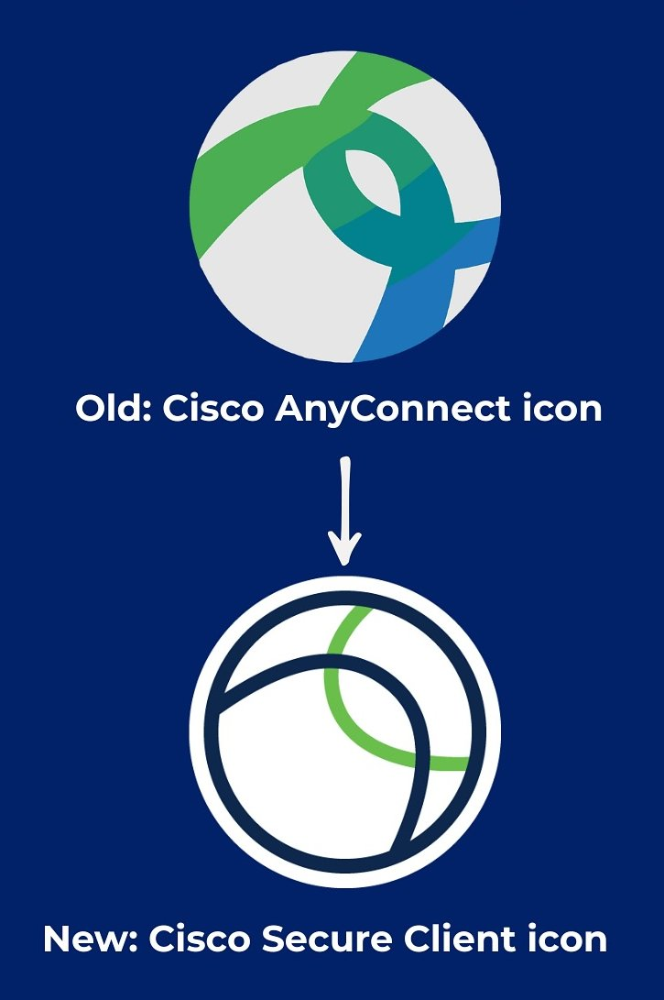

奶昔🥤
@realNyarime
前阵子看过一篇帖子，说GFW早期的技术是思科公司提供的，看来思科还为GFW做出了巨大贡献
令我不解的是Cisco Secure Client（原Cisco AnyConnect客户端）在国区App Store一直存在，至今该VPN应用仍未ICP备案下架，而且它不需要像xChat强制要求iOS26，仅需iOS13及以上就能运行
https://t.co/VF2vZopo8t
引用网友的一句话：美国人抵制我们的华为，我们却在用他们的思科
